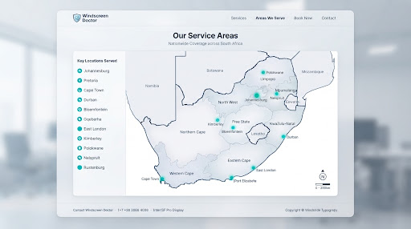

Gauteng
- Johannesburg and surrounds
- Pretoria and Centurion
- East Rand and West Rand
Coverage depends on technician and stock availability in your area. Tell us where the vehicle is and we will confirm before booking.
The map is a planning guide rather than a promise of immediate availability. Submit your suburb for confirmation.

Gqeberha, East London and surrounding areas.
Bloemfontein and surrounding areas.
Send your town or suburb and we will confirm current service availability.
If it is not explicitly listed, submit the location and vehicle details for a direct availability check.
Request an Area Check